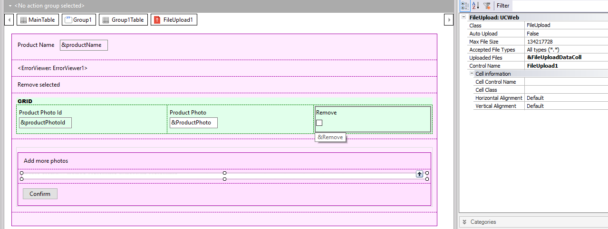

File Upload control
File Upload is an HTML5 control whose purpose is to enable the end-users to upload multiple files to the web server's file system at the same time. Those files can be handled as needed afterward. The control is distributed with GeneXus and has the following characteristics:
The control can be found in the Extended Controls section of the Toolbox and should be dragged to the form. Only the Abstract layout supports this control. When the control is dragged to the form, the FileUploadData SDT is imported to the KB. Its purpose is to get the file data that is going to be uploaded. How to use the control
2. When the files are uploaded, you can get them using the variable associated with the Upload Files property. The files are uploaded to the server file system, to the location indicated on the Temp media directory property. Those files are deleted from the server on a basis established here. In Java, the files are deleted according to this document. Then, using the File data type is recommended to check for the existence of the file before using it. Control Properties
Control Events
Control Methods
How to configure the appearance of the File Upload UCUse the FileUpload Class of the Theme (or define one of its descendants). The FileUpload class is assigned by default to the Class property of the UC. The Class can be edited on the Theme, as follows:
How to change the captions of the buttonsThe captions of the buttons are GeneXus standard messages. If you want to change them, you have to access the language object and unmark the "Show only user messages" filter. The captions of the buttons of the FileUpload User Control have the GXM_fileupload prefix. ExampleConsider the following two Transactions (both are set as Business Component): Look at the ProductPanel object: It receives the &ProductId as a parameter. It loads the Product information and allows the end-user to make any changes to the product basic information (name or price). Also, it offers a button to upload several photos related to this product. When that button is clicked, another Web Panel is called. There the end-user can choose multiple files to upload at the same time. Besides, he/she can also remove photos. Then, the resulting form looks as follows:  Note that the File Upload control has been dragged to the form and the "Uploaded Files" property has been assigned to the &FileUploadedDataColl variable. Also, note that the photos that have already been uploaded are going to be displayed using a grid. Below you can see the part of the code related to the saving process of the photos in the database. To see the entire example, download it from FileUpload UC sample.
Event 'Confirm'
for &FileUploadData in &FileUploadDataColl
&ProductPhotoItem = new()
&ProductPhotoItem.ProductId = &ProductId
&ProductPhotoItem.ProductPhoto = &FileUploadData.File
&ProductPhotoItem.Save()
if &ProductPhotoItem.Success()
commit
&count += 1
msg(format(!"Data sucessfully added: File #%1",&count.Tostring()))
else
&ErrorMessage = &ProductPhotoItem.GetMessages().Item(1).Description
msg(format(!"There was an error uploading the images: %1",&ErrorMessage))
endif
endfor
grid1.Refresh()
Endevent
Basically, the &FileUploadDataColl collection is scanned and each photo is saved to the database. The ProductPhotoId is assigned by the following rule which is defined in the ProductPhoto Transaction: serial(productPhotoId,ProductPhotoLastId,1); At runtime, the form looks as follows:
Tip: check maximum requests size (.NET)By default, requests size is limited to 4M, so if a file bigger than 4M is being uploaded an error like "Error Internal Server Error" occurs. Using browser developers tools (F12) the error shows: "Failed to load resource: the server responded with a status of 500 (Internal Server Error) Gxobject.aspx:1" Using Windows event viewer it shows: "Exception message: Maximum request length exceeded." How to fix it? Try to set a higher "maximum request size" value in web.config file.
<system.web>
<httpRuntime executionTimeout="600" maxRequestLength="20120"/>
Download sample from FileUpload UC sample
|